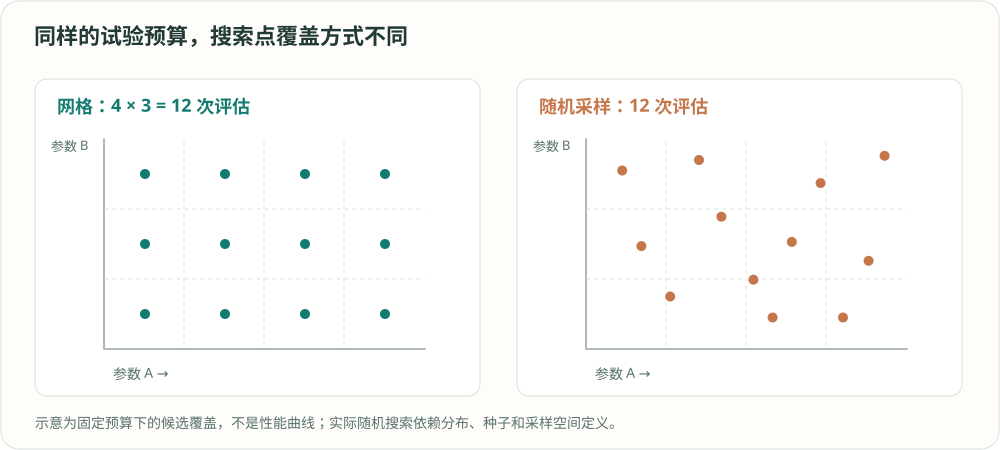
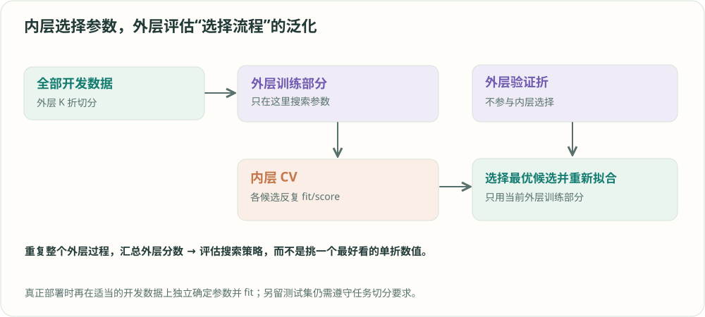
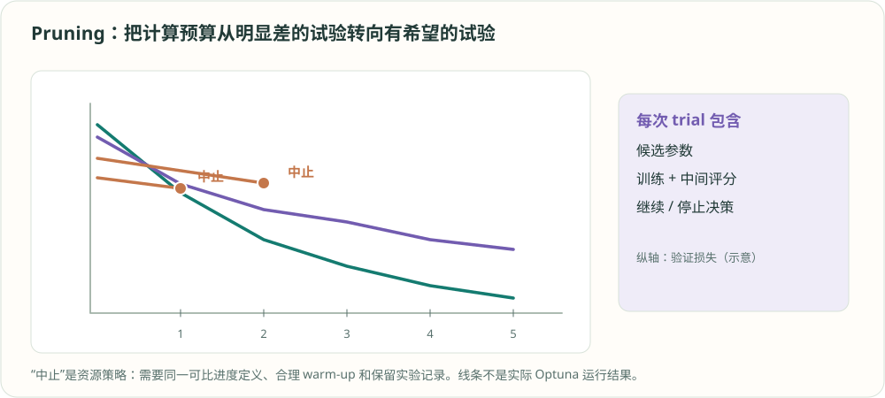

超参数搜索与 AutoML：让试验预算服务于可信泛化
网格、随机采样、贝叶斯优化与提前终止都在回答同一个资源分配问题：如何用有限的训练次数选择参数？更关键的是，如何在搜索之后仍保有真正独立的性能证据。
01 · 参数与超参数是两种不同的决策
以 RBF 核 SVM 为例，w 或支持向量的对偶系数属于训练算法从数据估计的参数；C、gamma、核类型和数据预处理规则属于事先配置或通过开发数据选择的超参数。我们可以把超参数写作 λ，对某个候选 λ 训练模型 f̂λ，然后用独立于该次训练的验证分数评价它。
超参数搜索是外层优化过程，不只是“多跑几个模型”。要完整定义一个试验，需要写下可搜索的参数空间、预算、切分、评分指标、每次试验使用的数据、随机种子和失败处理。若把特征选择、标准化等预处理放在搜索对象之外，就会从验证折偷学统计量。
02 · 把搜索目标写成一个可解释的公式
设 CVScore(λ) 是在开发数据内部多折交叉验证得到的平均验证分数，那么搜索希望找到使该评分最大（或损失最小）的候选超参数。与训练参数不同，搜索目标本身是通过多次训练拟合得到的噪声估计。
f_{λ,−k} 表示在除了第 k 个验证折之外的数据上训练的估计器，Dₖ 是第 k 个验证折。随着反复搜索的候选增多，“挑最高分”也越来越容易选择偶然高估的候选，这称为选择偏差或验证集过拟合。因此搜索结果中的最好 CV 分数不等同于最终泛化性能。
03 · 网格搜索与随机搜索各自覆盖什么
网格搜索（GridSearchCV）列出每个参数的离散候选，评估笛卡尔积。例如四个 C 与三个 gamma 组合共有 12 个候选，在 3 折 CV 下将涉及至少 36 次拟合（若 refit=True 还需在完整开发集重拟合一次）。网格容易审计，却会随着搜索维数迅速膨胀。
随机搜索（RandomizedSearchCV）从指定分布或列表抽样一定数量的参数配置；在等预算条件下可能覆盖更多参数的不同取值，但性能依赖真实有效维度、搜索分布、随机种子和预算。它不保证一定优于网格搜索。对正值跨度很大的参数常使用对数尺度采样，避免只把试验密集堆在较大数值附近。

如果某个参数只有离散、顺序或条件取值，应定义合适的搜索空间，而不是一律把它看成连续实数。不同算法可能需要各自不同的参数子空间，甚至需要为不同模型定义不同预处理管线。
04 · 交叉验证放在哪一层，决定能宣称什么
在一次普通搜索中，GridSearchCV 的内层 CV 用于选择参数，best_score_ 是已经被最大化过的验证估计。如果想要对“带调参策略的整体学习程序”做外部泛化评价，应再用外层交叉验证包住整个搜索，即 nested CV：外层训练数据内部执行搜索，外层保留折只用于评价获选模型。

如果已经有真正独立、足够有代表性的保留测试集，也可以先在开发集上运行搜索，再对最后选定方案进行一次测试；嵌套 CV 并非每个项目都必须同时使用，但它帮助检验搜索过程的选择偏差。时间序列或多主体数据必须使用相应的时间/分组切分，不能因为用了两层就认为任何随机抽样都无泄漏。
05 · 贝叶斯优化与 Optuna：用历史试验引导新候选
基于历史试验表现的优化器可以将后续试验预算倾向于更有希望的参数区域。Optuna 使用 Trial 对象定义参数空间，例如 trial.suggest_float("C",1e−2,1e2,log=True)，再在 objective(trial) 中训练、评价并返回分数。其采样算法可以使用 TPE 等方法，适用于条件参数空间和多样化试验组织。
Optuna 不是无需定义目标的 AutoML 魔法：必须明确 CV 切分、指标、目标方向、搜索次数、试验资源和最终保留测试集。对于同一个结果，如果有人先试了 200 个配置再挑最好，有人只试 5 个，就不能仅凭最优验证分数说前者算法“更好”；报告还应包括预算、搜索空间和随机性。
另提供独立的 Optuna 可选实战脚本，用内置 Iris 数据、固定采样种子与 CV 进行 RBF SVC 搜索；它会真实打印最优 CV 候选并在最后使用保留测试集。该脚本额外需要安装 optuna，不把未安装该依赖的离线示例检查当成它已成功执行。
06 · Pruning：提前停掉哪些试验有意义
对每次训练可逐轮得到中间指标的算法，可在各轮向优化器 trial.report(metric,step) 提交结果，并调用 trial.should_prune() 判断当前试验是否应该提前停止。这样可以把预算留给有希望的配置，尤其在深度网络或长期迭代算法中有价值。

提前终止需要考虑不同试验是否处在可比进度、是否有足够 warm-up、指标是否噪声很大，以及模型是否有“先慢后快”的特性。普通的 GridSearchCV + SVC 不能凭空提供逐 epoch 的中间验证曲线；不要为讲解 pruning 而伪造不存在的 report 时点。
07 · AutoML：自动化的是流程，不是责任
AutoML 系统可以自动选择预处理、模型家族、参数、特征和集成策略；有时还管理资源调度。但它仍在用户定义的目标和搜索边界内行动。若标签在数据生产过程中泄漏、验证方案不符合部署、评价指标偏离业务价值，自动化可能只会更快地放大这些错误。
实践中应当从可解释基线开始、固定外部评价协议、设置算力与时间预算，随后运行有限搜索并记录每个候选的配置、CV 均值/离散程度、异常和失败原因。最终交付还要测延迟、资源占用、可维护性、漂移与人群分组误差。自动搜索得到的最高分不等于需要部署的最佳系统。
08 · 离线实验：同一数据上比较网格与随机预算
使用内置 Iris 数据；先保留独立测试集，在开发集中运行 3 折网格/随机搜索，再只依据开发 CV 选择其中一个候选方案，最终对获选方案执行一次测试。这里的随机搜索从离散列表采样，属于无放回或近似不重复的有限空间抽样行为（具体取决于参数分布类型）。
import numpy as np
from sklearn.datasets import load_iris
from sklearn.model_selection import (
train_test_split, StratifiedKFold, GridSearchCV, RandomizedSearchCV)
from sklearn.pipeline import make_pipeline
from sklearn.preprocessing import StandardScaler
from sklearn.svm import SVC
from sklearn.metrics import balanced_accuracy_score
X, y = load_iris(return_X_y=True)
Xdev, Xtest, ydev, ytest = train_test_split(
X, y, test_size=0.2, stratify=y, random_state=15)
pipe = make_pipeline(StandardScaler(), SVC(kernel="rbf"))
grid_params = {"svc__C": [0.1, 1.0, 10.0],
"svc__gamma": [0.01, 0.1, 1.0]}
random_params = {"svc__C": [0.01, 0.1, 1.0, 10.0],
"svc__gamma": [0.01, 0.1, 1.0]}
cv = StratifiedKFold(n_splits=3, shuffle=True, random_state=15)
grid = GridSearchCV(pipe, grid_params, cv=cv,
scoring="balanced_accuracy", n_jobs=1)
random = RandomizedSearchCV(
pipe, random_params, n_iter=7, cv=cv, random_state=15,
scoring="balanced_accuracy", n_jobs=1)
grid.fit(Xdev, ydev)
random.fit(Xdev, ydev)
methods = {"grid": grid, "random": random}
chosen = max(methods, key=lambda k: methods[k].best_score_)
best = methods[chosen]
prediction = best.predict(Xtest)
print("best CV method:", chosen)
print("best params:", best.best_params_)
print("best CV score:", round(best.best_score_, 3))
print("held-out balanced accuracy:",
round(balanced_accuracy_score(ytest, prediction), 3))
assert len(prediction) == len(ytest)
assert all(0 <= m.best_score_ <= 1 for m in methods.values())需要 Python 3.10+、NumPy 和 scikit-learn。这里的搜索预算分别为网格 9 个配置、随机 7 次，并非严格的同预算公平对照；目的是展示 API 与评估边界，不是性能实验。若要比较搜索算法，应控制相同训练资源和切分，重复多个随机种子或数据任务，再统计分布。
09 · 嵌套交叉验证的最小复核
以下示例单独对一个小网格搜索策略做外层 CV：每个外层训练折内部使用 2 折验证选择参数，每个外层测试折只用来评价这个选择过程。它与上面的单次保留测试流程是两种不同的外部评价方式，不应把它们混为一次实验的重复独立证据。
import numpy as np
from sklearn.datasets import load_iris
from sklearn.model_selection import GridSearchCV, StratifiedKFold, cross_val_score
from sklearn.pipeline import make_pipeline
from sklearn.preprocessing import StandardScaler
from sklearn.svm import SVC
X, y = load_iris(return_X_y=True)
inner = StratifiedKFold(n_splits=2, shuffle=True, random_state=115)
outer = StratifiedKFold(n_splits=3, shuffle=True, random_state=15)
search = GridSearchCV(
make_pipeline(StandardScaler(), SVC(kernel="rbf")),
{"svc__C": [0.1, 1.0, 10.0],
"svc__gamma": [0.1, 1.0]},
cv=inner, scoring="balanced_accuracy", n_jobs=1)
outer_scores = cross_val_score(
search, X, y, cv=outer, scoring="balanced_accuracy")
print("outer nested CV:", np.round(outer_scores, 3))
print("mean:", round(float(outer_scores.mean()), 3))
assert outer_scores.shape == (3,)
assert np.all(np.isfinite(outer_scores))两层 CV 的代价是额外模型拟合，而且外层分数的波动并不等于全部部署不确定性。真正独立的未来数据分布仍可能改变。
10 · 来源、版本与验收界限
参数空间、随机种子、评分目标和拟合次数是实验结果的一部分。记录 scikit-learn 与 Optuna 版本，尤其不要将开发版 API 直接假定为稳定版；没有运行的外部 Optuna 可选脚本只应说“已提供”，不能声称“已得到最佳参数”。